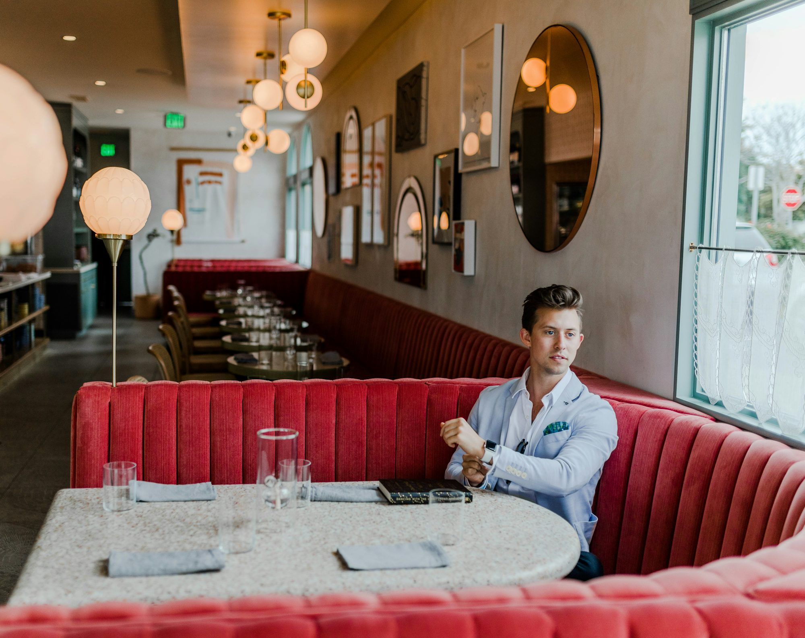

Culinary Journeys: Exploring Global Flavors in Modern Restaurants
This article takes a deep dive into the trend of global cuisines in modern dining, highlighting the fusion of flavors and the cultural stories behind various dishes.
As globalization continues to shape our lives, food has become one of the most accessible ways to explore different cultures. The rise of travel and technology has made it easier for chefs and home cooks alike to access ingredients and techniques from around the world. This exchange of culinary ideas has led to a flourishing of fusion cuisines that blend elements from various traditions, creating exciting and unique dishes.
One of the most compelling aspects of this culinary fusion is the ability to celebrate diversity while creating something entirely new. For example, Korean tacos combine the bold flavors of Korean barbecue with the convenience of Mexican street food, resulting in a dish that pays homage to both cultures. Similarly, sushi burritos bring together the art of sushi-making with the handheld convenience of a burrito, appealing to a broad audience. These innovative combinations reflect the way food can serve as a bridge between cultures, fostering understanding and appreciation.
Moreover, many chefs are drawing inspiration from their own multicultural backgrounds, infusing their menus with personal stories and family recipes. This practice not only adds authenticity to the dining experience but also creates a deeper connection between the food and the diner. By sharing their culinary heritage, chefs invite guests to participate in their journey, making the meal a shared experience.
Another significant trend in modern dining is the rise of ethnic and specialty restaurants that focus on authentic regional cuisines. As diners seek out genuine culinary experiences, restaurants that specialize in specific cultural dishes have become increasingly popular. These establishments often prioritize traditional cooking methods, using ingredients sourced directly from the regions they represent. The emphasis on authenticity allows diners to experience the rich history and culture behind each dish, offering a more immersive dining experience.
Restaurants like these are often celebrated for their ability to transport diners to far-off places, even if only for an evening. For instance, a traditional Indian restaurant may offer diners a taste of the vibrant spices and flavors of India, complete with cultural decor and music that enhances the experience. This approach not only honors the culinary traditions of the region but also provides a platform for cultural exchange, fostering greater appreciation for diversity.
In addition to ethnic restaurants, the trend of farm-to-table dining has gained momentum, further enriching the culinary landscape. Many chefs are committed to using locally sourced ingredients, which not only supports local farmers but also allows them to create dishes that reflect the seasonal bounty of their region. This focus on freshness and sustainability often leads to innovative interpretations of traditional dishes, as chefs experiment with local ingredients to put their own spin on global flavors.
For instance, a Mediterranean restaurant may utilize locally grown vegetables and herbs to create dishes that celebrate the essence of the Mediterranean diet while showcasing regional produce. This approach not only highlights the importance of sustainability but also emphasizes the creativity of chefs who are eager to push culinary boundaries while remaining rooted in their local communities.
The integration of technology has also played a significant role in the evolution of global cuisines. The rise of food delivery services and online platforms has made it easier for diners to access a variety of cuisines from the comfort of their homes. This convenience has encouraged adventurous eating, as people are more willing to try new flavors and dishes that they might not have otherwise explored in a traditional dining setting.
Moreover, social media platforms have become vital tools for chefs and restaurants to showcase their culinary creations. Platforms like Instagram allow chefs to share visually stunning dishes that highlight the colors and textures of their food, enticing potential diners to try new flavors. This visual storytelling not only attracts customers but also helps to build a sense of community among food enthusiasts who share a passion for diverse cuisines.
The growth of culinary festivals and food events is another exciting development in the world of dining. These gatherings celebrate global flavors, allowing chefs to collaborate and showcase their unique culinary styles. Food festivals often feature diverse cuisines, offering attendees the chance to sample dishes from various cultures in one location. This not only promotes culinary diversity but also fosters connections between chefs and diners, creating a shared love for food that transcends borders.
As we explore the world of global flavors, it is essential to acknowledge the cultural narratives behind the dishes we enjoy. Every cuisine carries with it a story of tradition, history, and community. By understanding the cultural significance of the food we consume, we can deepen our appreciation for the diversity that exists within the culinary world. Chefs who take the time to educate their diners about the origins and significance of their dishes enrich the overall experience, fostering a greater understanding of the cultures they represent.
In conclusion, the modern dining landscape is a tapestry woven from global influences and local traditions. The rise of culinary fusion, the emphasis on authenticity, and the commitment to sustainability are all shaping how we experience food. As diners continue to seek out unique flavors and stories, restaurants that embrace these trends will thrive in an increasingly interconnected world. Ultimately, food serves as a universal language, bringing people together and celebrating the rich diversity of our shared culinary heritage. As we embark on this culinary journey, we open ourselves up to new experiences and connections that enrich our lives and broaden our horizons.